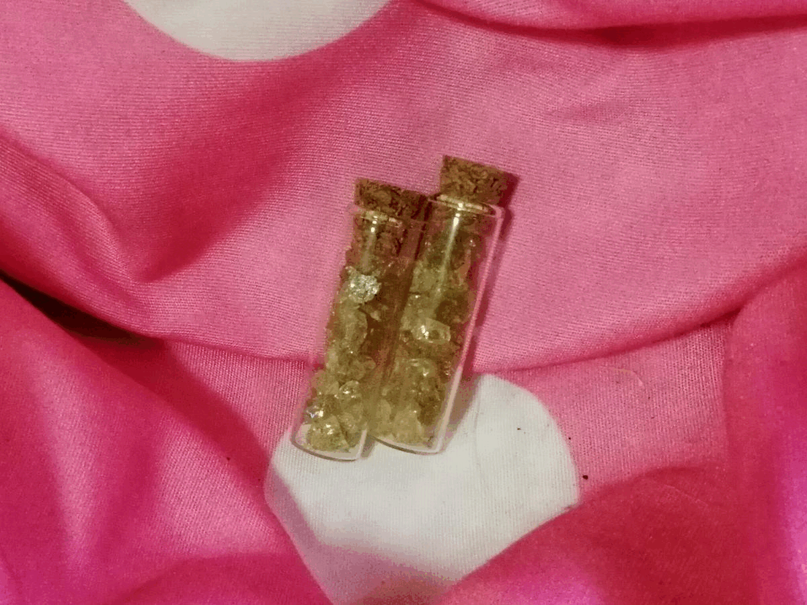
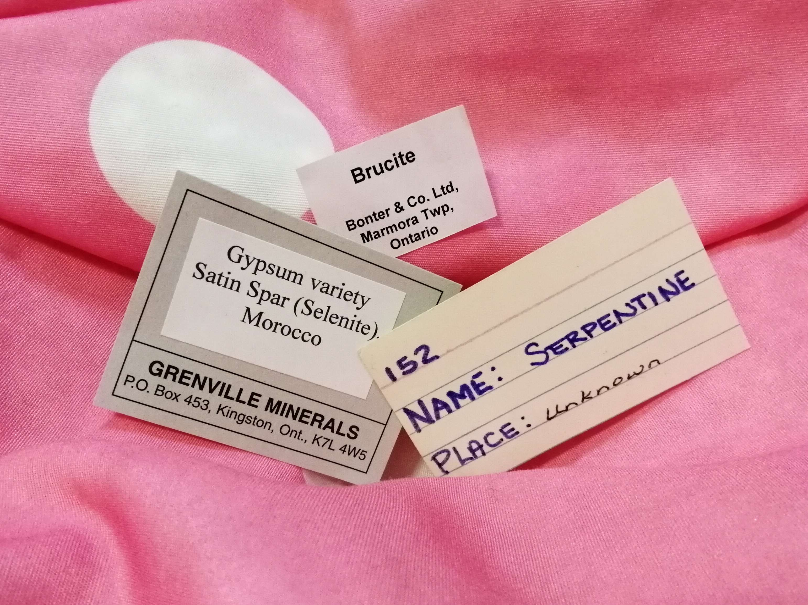

When looking for a place to store your collection, understand that keeping your specimens safe should be your priority. Different specimens require different types of maintenance. Let's go over some of them.
| Okenite is a special case. This is less catered towards one mineral but rather towards all with similar brittleness. Okenite has extremely small crystals to the extent of which they break upon touch. It's recommended that nothing touches the crystals. It can be a good idea to protect them with a case. Other minerals like talc or gypsum desert roses act in similar ways. In these situations, it is also best to move specimens as little as possible. | Pyrite is prone to pyrite's disease because of its chemical composition and it being a metal. Other metals can be affected as well. Pyrite's disease is where the specimen starts breaking down from the inside, turning black, until it can no longer hold itself together. Pyrites should be kept away from each other so that there is less risk of the disease spreading. Additionally, they can be kept with silica gel packets (found in seaweed and other packaged foods) or other dehumidifiers since humidity boosts risks. |
 I store my collection in a shelf that covers a wall. Each section has a specific theme. For example, I have a fluorescent minerals cubicle, a shell cubicle, 2 fossil cubicles, and a lot more. I know of other collectors who sort their collection by alphabetical order, chemical properties, colour, etc. I generally shelve in a way that ensures all of them are visible. I place the smaller specimens in the front and larger/taller ones in the back. I’ve also purchased stands and painted wooden blocks to elevate certain rocks, especially those that I want in the spotlight. If you’ve found any of these tips helpful, consider applying them to your collection as well!

How important are labels? Important enough to get their own section! Cataloging your specimens
is a feasible alternative, but it requires a bit more attention to detail and there is generally
the goal of potentially selling your specimens, so we won’t focus on that. To optimize your
appreciation over time, however, it’s still a good idea to be able to identify them. If you are
unable to track some of this information, simply skip over it or put “N.A.” After all, a label
is simply to act as an aid for you.
Label format: Name, location, date collected, who collected, additional information
This process can be somewhat tedious and time consuming, but know that in the end, it will be well worth it. If you have ever considered passing down your collection to future generations or even to sell it, then the label will make your life as well as theirs a lot easier. The reason this is so useful for vendors is because sometimes, collectors are looking for both the mineral type as well as where it’s from. Some localities simply produce higher quality specimens or less specimens, making them worth more or less accordingly.
Go back to top